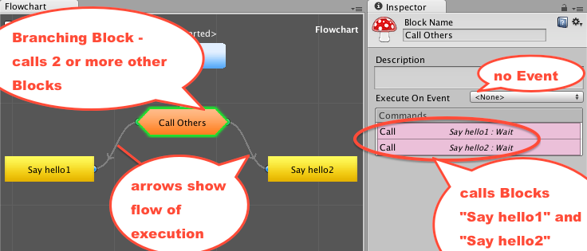
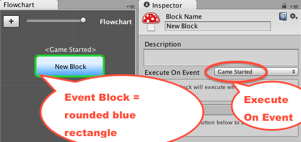
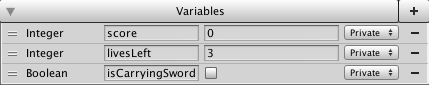

Glossary of terms
A
Animator parameter: Special variables that can be used to change what happens in an animation chart, such as when to trigger a chance from one animation state to another.
Assets: The files on the computer/device, that are used in a game. Asset files include audio clips, video clips, 2D images, 3D models, and text files containing computer program code.
Audio tag: One of the tags specially allowing the control of Audio from within the Story Text of a Say Command.
There are four audio related tags:
{audio=AudioObjectName} Play Audio Once
{audioloop=AudioObjectName} Play Audio Loop
{audiopause=AudioObjectName} Pause Audio
{audiostop=AudioObjectName} Stop Audio
For more information see: Audio Tags recipe
Audiosource: A special component of Unity objects that can refer to a particular audio clip file, and control its playing / pausing / 3d effects etc.
B
Block: A Fungus Block is a sequence of Commands that have been created inside a Fungus Flowchart.
Block connection: When Commands in one Block cause the execution of Commands in another Block.
Boolean variable: A true/false variable.
Branching block: A Block that is not an Event Block, and causes execution of 2 or more other Blocks.
Note: Branching Blocks are displayed as an orange polygon in the Flowchart window.

Branching narrative: When choices by the user (via the Menu Command for example) will change what Narrative Commands are executed and displayed to the user.
Build platform: The target device for which a Unity game application will be built.
Build settings: Build settings include the target platform, screen resolution, input devices, scenes to be included etc.
C
Csharp (C♯): A computer programming language developed by Microsoft, similar to Java. C♯ is one of the programming languages that can be used to write scripts for controlling Unity games.
Character: A Fungus gameObject allowing the personalisation of narrative, allowing characters to have names, special colours for their text on screen, and a range of different named images so character images can be displayed corresponding to the content of their dialog.
Clickable Sprite: A 2D image on screen that has been code to do something when clicked with the mouse or selected by the trackpad.
Coding / Scripting: Writing lines of computer code to control execution of a computer program, such as a Unity game (as opposed to using a visual language such as Fungus Flowcharts).
Command: An instruction for the Unity game engine to do something, examples are to play or stop a sound, or to display some text to the user in a dialog.
Command category: THe Fungus commands are grouped according to what kind of action they will lead to.
Command property panel: When a Block is selected in a Fungus Flowchart, the top-half of the Inspector window will show the properties and list of Commands for that Block. When one of the Commands is selected, that its properties are displayed in the bottom-half of the Inspector window.
Condition: Conditions are tests that are either "TRUE" or "FALSE" at a particular point in time. Different Commands can be defined to be executed depending on the value of a condition test in a Fungus Block.
CSV: Comma Separated Variable - a computer file format where the values of rows and columns are recorded, in a form that can be loaded into a spreadsheet..
Custom strings: As well as the automatically generated rows for each Say, Menu, Command etc., you can also add your own rows to the localisation file using any string id you want. To use these custom strings, you use variable substitution.
For example, say you have a custom string called "PlayerName", you can put {$PlayerName} in any Say text to substitute the correct localised value from the localisation file.
D
Draggable Sprite: A 2D image on screen that has been code to do something when clicked-and-dragged with the mouse or trackpad.
DragTarget Sprite: A 2D image that has been defined to execute some action(s) if a Draggable Sprite is dragged and released over it.
E
Editor: An application allowing the editing of game resources. The Unity Editor has multiple windows for viewing / editing properties of files, scene contents, UI dialogs, camera settings etc.
Event Handler: A Fungus Block or a Unity coded "method" that will be executed when a particular "Event" occurs. For example when the "SPACE" key is pressed the game should respond to the user having executed a spell or fired a gun or whatever.
Event block: Any Block whose execution is triggered by an Event, such as Game Started or Key Preses.
Note: Event Blocks are displayed as rounded blue rectangles in the Flowchart window.

Excel: A computer spreadsheet application program from Microsoft, part of the MS Office suite.
see the Microsoft website: Microsoft Excel application
Execution: The running of Commands or statements in a computer script / program. Making the computer do something.
F
Float variable: A variable that stores decimal numbers, such as 5.5, -0.11 etc.
Flowchart: A Fungus Flowchart contains a set of Blocks, each containing Commands to be executed.
Flow control: A general term referring to how a computer decides what to do next. So it is deciding which Fungus Command or Unity code statement to execute next. Typical Flow commands include decision choices such as loops or IF-conditions etc.
Flowchart item id: The unique number that is created for each Block of a Flowchart. This ID is used fpr serialisation (save and load) purposes, and not usually seen by the developer.
Flowchart Localization id: A special, unique name, used for associating language localization data for each Fungus game project.
Flowchart Message: A Message is basically a piece of text, but one that plays the role of being able to act as a 'trigger event' to cause Blocks to start executing.
Messages can be sent (via the Flow | Send Message Command), either to the current Flowchart, or to ALL Flowcharts. One of the Events that can be defined to start the execution of a Block is if a particular Message has been received by the Flowchart.
Flowchart Window: A special window available in the Unity Editor for editing and working with Fungus Flowcharts and their Blocks.
I
Integer variable: A variable that stores whole numbers, such as 100, 2, 0, -2 etc.
L
Landscape orientation: An orientation of an image or computer screen, where the width is greater than the height.
Language Column: When you first export the localization .csv (Comma-Separated-Variable) file it has 3 columns (Key, Description, Standard). When you want to add a new language to the file you add a new column for that language. You can use whatever column name you like, though it's typical to use two letter language codes (FR, ES, DE, etc.).
The Set Language command is provided with the name of the column for the language you wish to use in Fungus.
Libre Office: A free and Open Source alternative to Microsoft Office.
Lean more and download from: LibreOffice.org
Localization: Localization and Internationalization refer to coding a game in such a way that it can be deployed in a manner supporting playing and interactions in multiple human languages.
Logging:
The Scripting | Debug Log Command allows the writing ('logging') of messages to the Console window while a scene is running. Logs provide a record of what has happened when the game is running, useful for checking what happened was what was intended, or for debugging (hunting down where errors are located).
M
Mecanim Animation: A Unity file representing an animation clip or pose. Animators manage the changes or mixing between one Animation clip and another.
Mecanim Animator: A Unity state-chart controller, which manages animated gameObjects - deciding when and how quickly objects should 'blend' into a different state or animation.
Menu Dialog: The UI elements (background / lines / text) that define the visual style of how the Text of Menu Commands is presented to the user.

Fungus provides a default Menu Dialog, but custom variations can be defined, for different games / scenes / characters etc.
O
Order in layer: If multiple objects have been assigned to the same Unity Sorting Layer, then the numeric value of the Order in Layer property determines their visual sorting order (what appears in front of what).
P
Parallax Sprite: The use of 2D sprites, moving at different speeds, to give the impression of 3D movement (where sprites for objects meant to be further away from the user move more slowly than objects closer to the game object.
Platform build: Refers to the device and type of application that the Unity editor will create. Examples are stand alone applications for Windows, Mac OS, iOS phone, Android phone, X-BOX etc.
Portrait: The Fungus Portrait Command is used to make the game display one of the Character Portrait images on the Stage. A particular image can be selected, and it can be made to move on/off stage.
Portrait orientation: An orientation of an image or computer screen, where the height is greater than the width.
Procedural Sound: A method of creating sounds using computer algorithms.
Private / Public variables: A Private variable as one that can only be accessed by Cmmands in Blocks in that Flowchart. A Public variable is one that can be accessed by Commands in Blocks in other Flowcharts as well as its own one.
S
Save profile: The Save Profile is basically a string that gets prepended to the key used to save & load variables in PlayerPrefs. This allows you to create separate save profiles using different names. For example, player 1's save data might use the Save Profile 'Chris', while player 2's data would use the Save Profile 'Matt', and their data can be saved / loaded independently.
The typical workflow would be:
-
Choose a suitable value fo the Save Profile (e.g. "player1")
-
Set Save Profile.
-
Save Variable(s).
Say Dialog: The UI elements (background / lines / text) that define the visual style of how the Story Text of Say Commands is presented to the user.

Fungus provides a default Say Dialog, but custom variations can be defined, for different games / scenes / characters etc.
Scenes: Unity Scenes are like chapters in a book, or "screens" in a game, or "levels" in a game. They allow the logic of a computer game to be broken into components. The "gameObjects" in a scene determine what software components will be created when a Scene starts running (others may be created or deleted once the Scene has started).
Screen aspect ratio: The relationship of the width of an image or screen to its height. Typical rations include 4:3 ad 16:10.
Screen resolution: The number of pixels wide and high a window or device supports.
Sorting layer: Unity 2D objects are assigned to a "Sorting Layer". This allows images/text to be assigned to layers such as Background, Foreground, Middleground, UI (on top of everything) etc.
Spine: Spine is a third-party 2D animation system from EsotericSoftware.com.
Spine Animation: Animation clip based on the Spine 2D system, that can be controlled from Fungus Commands (once the Unity Spine and Fungus Spine add-on packages have been installed).
Sprites: 2D Images, that may be hidden / revealed. Sprite may be moved through Fungus Commands, or Unity code. Sprites can also be defined to be "draggable" by the users computer mouse pointer or mobile device touch gestures.
Stage: A Fungus gameObject in the scene, used to define the position and start-end movements of Character Portrait images controlled by Fungus Portrait Commands.
Standard block: A Fungus Block whose execution is not triggered by an event (so it is not an Event Block), and which does not cause the execution of 2 or more other Blocks (so is not a Branching Block).
Note: Standard Blocks are displayed as yellow rectangles in the Flowchart window.

Standard Text: When you export the localization file, there is a Standard Text field. This is populated with the text that has been entered into the Say, Menu, etc. text fields in the Unity editor. In normal usage, this field is in the localisation file for reference so localizers know what text needs to be translated. For example, if the project is drafted using English, then the text in Say, Menu Commands etc. would be in English, and in the exported localization file this text would appear in the Standard Text fields.
Note, if you use the Set Language command with an empty language string then the values in the Standard Text field will be used when Fungus runs.
Story Text Tags: Special instructions that can be embedded inside the Story Text of Say commands. Examples are tags that start/stop playing a sound, or send a message.
String ID: This is an automatically generated ID code, that is stored in the first column of the localisation file. These IDs are generated automatically when you export the strings using the Localization object.
The ID is needed since every localised text string needs a unique identifying name so that it can be mapped it back to the Say, Menu, etc. command that references it.
String variable: A variable that stores text characters, such as the player's name, or colour of the potion they are carrying.
T
Tag: Special characters that can be inserted into Fungus Say Commands, to control other aspects of the scene, such as the playing of a sound, or the shaking of the camera, or the sending of a message to cause other Blocks to start executing.
U
Unity: A game engine and IDE (Interactive Development Environment) - with program code editor, and audio/graphics editing facilities. Able to build applications for deployment to Windows, Mac, Linus, iOS, Android, XBox etc.
Unity UI: The building of visual interfaces for computer programs deployed by Unity.
Usfxr: A system for generating sound effects from mathematical parameters.
Built into Fungus and based on the open source project at: Usfxr at GitHub
V
Variable: A named memory location, from which values can be retrieved at a later date.
Variable default value: A "default" value refers to the value given to a variable automatically, if no particular value is specified. In the Variables section at the bottom of the Flowchart window, as well as defining the names and data types of variables, you can also set default values here.

Variables Panel: The very bottom section of the Flowchart window is where variables (such as score, playerName, carryingGreenKey etc.) can be defined for use in Fungus Commands.
Variable saving: The saving of the value of a variable to the devices 'disk'. So when another Unity Scene is loaded, the saved value can be loaded from saved memory. The saved value can also be loaded the next time the game application is executed on a device.
Variable substitution:
This relates to the use of a tag in the Story Text of a Say Command, whereby the contents of a Variable will be inserted into that part of the text for the Say Command
{$VarName} Substitute variable
View, Move, Rotate, Scale & Rectangle tools: The core tools offered in the Unity editor for changing basic properties of 2D and 3D objects
View: A Fungus gameObject that helps ensure good visual experience regardless of device aspect ration, and used for camera movements and control by Fungus Commands.
Voice over: A sound clip file containing recorded audio that corresponds to text being displayed on screen.
W
Webplayer: A Build option in Unity that creates an application that can play inside web pages that have the Unity Web Player plug-in installed. The need fo the plug-in and web-player option are being replaced by the WebGL Unity build facility.
WebGL: WebGL is a technology available in modern browsers that allows for interactive, high quality computer graphics within web pages, without the need for any special plug-ins (such as Flash or the Unity Player). It promised to be the future for multimedia web page content and interaction.